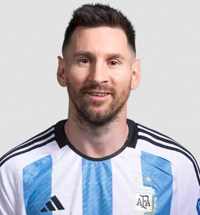

Biografia
Lionel Andrés Messi Cuccittini, mais conhecido como Lionel Messi ou simplesmente Messi, é um jogador de futebol argentino que atua como atacante. Ele é amplamente considerado um dos maiores jogadores de futebol de todos os tempos. Messi nasceu em 24 de junho de 1987, em Rosario, Argentina. Ele começou a jogar futebol desde muito jovem e rapidamente se destacou por suas habilidades excepcionais.
